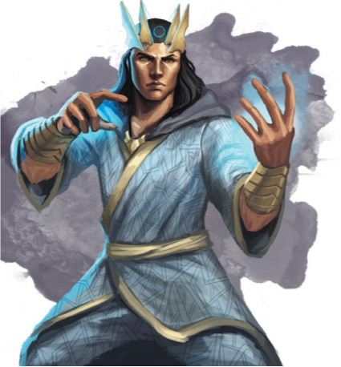

这一道路融合了神圣的热诚和心灵的力量。心灵领域的力量教导其追随者，心灵是造物之中最伟大的工具和最强大的武器。一个心灵领域的牧师学会了利用自己的精神力量，通过这一天赋来庇护信众，打击敌人。
在艾伯伦，心灵领域和离梦人的光芒大道、瑞依卓尔的梦启之道联系最为紧密。然而黄泉巨龙的追随者也可能追循这条道路。尽管来自瑟奥瑞特的异象的确会将祭司们逼入疯狂，它们也有可能会从中揭示出更深层的秘密和精神的力量。

你在心灵领域法术列表中对应的牧师等级获得领域法术。见《玩家手册》的神圣领域职业特性来了解领域法术如何运作。
|
牧师等级 |
法术 |
|
1st |
命令术command, 不谐低语dissonant whispers |
|
3rd |
侦测思想detect
thoughts, 魅影之力phantasmal
force |
|
5th |
敌群环绕enemies
abound （XGE）,恐惧术 fear |
|
7th |
困惑术confusion,魅影杀手phantasmal killer |
|
9th |
支配人类dominate
person,心灵遥控telekinesis |
从1级起，你能自内在的精神能量之井中召唤出力量。当你进行一次属性检定时，你能在看到结果，但尚未知道成功与否之前选择重新掷骰。你在这次重新掷骰中获得等同于你牧师等级的加值（最少为1）。
你可以使用该特性两次。你在完成一次长休或短休后重新获得消耗的使用次数。
同样在1级起，你能以心灵的力量挤压你的敌人。当你施展一个造成光耀伤害的牧师法术或戏法时，你可以选择让它改为造成心灵伤害。
从2级起，你能可以使用引导神力扰乱敌人的思想。当一个30尺内你可见的生物进行一次感知豁免检定时，你可以用反应引导神力让其具有劣势。你必须在知道掷骰的结果之前使用该能力。
如果造成感知豁免的法术和效应并非由你发出，你还可以选择在其进行豁免后立即对目标造成你牧师等级一半的心灵伤害。
6级起，你的精神力量得到了提升，仅仅是你的存在就能够让周围的人感到心神安定。
当你10尺内的友善生物必须进行一次智力，感知或魅力豁免时，该生物在豁免检定中获得+2加值。在提供这些加值时，你必须处于未失能状态。
第8级起，你施展牧师戏法造成伤害时，可以再加上你的感知调整值。
从17级起，当30尺内你能看见的一位盟友在豁免检定中失败时，你可以将该骰子结果替换为20，令结果可能有所改变。一旦你使用了该特性，直到你完成一次短休或长休之前你无法再次使用。